Runge is an Interactive Solver for Systems of Ordinary Differential Equations. It
solves initial value problem (aka Cauchy problem) defined as the following: for a
given system of ordinary differential equations
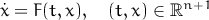
and given initial values
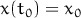
find solution
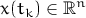
at a given point of “time” i.e. for a given value 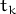 of independent variable 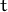.
Actually Runge produces solutions set
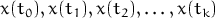
where is the number of steps taken. This allows to build trajectories of
solutions.
- It’s fast. It utilizes BLAS and LAPACK FORTRAN libraries optimized
for modern multi-core processors.
- It’s interactive. It allows you to start a solution by mouse click on a
plane.
- It’s precise. It uses Runge Rule to adjust step length to satisfy required
precision on each step.
- It’s effective. When it needs to compute derivatives (Jacobian matrix,
for example) it does that analytically, i.e. without using numerical
methods.
- It’s portable. It works on Windows and Linux (32 and 64 bit versions)
and Mac OSX (64 bit only).
- It’s open. It allows you to implement and embed your own algorithms
(aka “solvers”).
- It’s easy to use. It allows to export results to MS Excel and MATLAB.
- It’s free. It’s distributed under Boost Software License.
Runge comes with pre-installed solvers optimized for solving differential equations
of different types:
- Type 1. Generic non-autonomous system
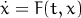
- Type 2. Generic autonomous system (it’s a subset of Type 1, i.e. you
can use both types 1 and 2 for autonomous sytems — sometimes it
makes sense for choosing appropriate solver)
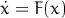
- Type 3. Pseudo-linear system (here it’s assumed that is
relatively small compared to matrix )
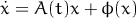
- Type 4. Pseudo-linear system with constant matrix B
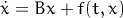
The solvers (algorithms) coming in standard package are:
- Runge-Kutta process modification developed by R. England. Fast and
precise method of fifth order suitable for solving systems of Type 1. See
[1].
- Exponential method modification developed by J.D. Lawson. It’s
recommended for linear and quasi-linear systems of Type 1,3 and 4
(including stiff ones). The method is A-stable for linear systems, i.e.
residuals do not depend on step length. See [2].
- Implicit process developed by H.H. Rosenbrock. It’s recommended for
non-linear systems of Type 1 and 2 (including stiff ones). See [3].
The following functions and operators are supported for programming the systems
mentioned above.
|
|
| + - * / ^ | arithmetic operators: add, subtract, multiply, divide, power |
|
|
| exp(x) | |
|
|
| sqrt(x) | |
|
|
| log(x) | natural logarithm of x |
|
|
| log10(x) | common (base 10) logarithm of x |
|
|
| sin(x) | sine of x |
|
|
| cos(x) | cosine of x |
|
|
| tan(x) | tangent of x |
|
|
| asin(x) | arc sine of x |
|
|
| acos(x) | arc cosine of x |
|
|
| atan(x) | arc tangent of x |
|
|
| sinh(x) | hyperbolic sine of x |
|
|
| cosh(x) | hyperbolic cosine of x |
|
|
| tanh(x) | hyperbolic tangent of x |
|
|
| sinint(x) | sine integral of x 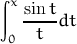 |
|
|
| cosint(x) | cosine integral of x 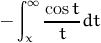 |
|
|
| sign(x) | sign of x 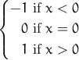 |
|
|
| abs(x) | |
|
|
| iif(x,expr1,expr2) | immediate if 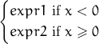 |
|
|
| sat(x,y) | satellite function of x and y 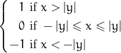 |
|
|
| i | 1 (one) |
|
|
| | 0 (empty field means zero) |
|
|
| |
Examples: 2*sin(t-1)+cos(t)-x^2, sqrt(abs(x)), iif(t,sin(x),cos(x))
etc.